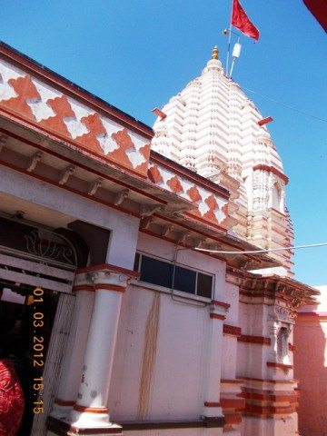

गढ़कालिका देवी को महाकवि कालिदास की आराध्य देवी माना जाता है। उनकी अनुकंपा से ही अल्पज्ञ कालिदास को विद्वता प्राप्त हुई थी। तांत्रिक दृष्टिकोण से यह एक सिद्धपीठ है।
त्रिपुरा माहात्म्य के अनुसार देश के 12 प्रमुख शक्तिपीठों में यह 6ठा स्थान इस मंदिर का ही है।
यह मंदिर जिस स्थान पर स्थित है, वहां कभी प्राचीन अवन्तिका नगरी बसी हुई थी। गढ़ पर स्थित होने से ये गढ़कालिका कहलाईं।

उक्त मंदिर में कालिकाजी के एक तरफ श्री महालक्ष्मीजी हैं और दूसरी तरफ श्री महासरस्वतीजी की प्रतिमा स्थित है। यहां से कुछ दूरी पर ही शिप्रा नदी है, वहीं पर सतियों का स्थान भी है।
उसके सामने ओखर श्मशान घाट है। पौराणिक दृष्टिकोण से गढ़कालिका मंदिर का विशेष महत्व है। यहां पर श्री दुर्गाशप्तशती का पाठ करने से आध्यात्मिक प्रगति होती है।
यहां नवरात्रि पर्व पर विशेष आयोजन होते हैं।